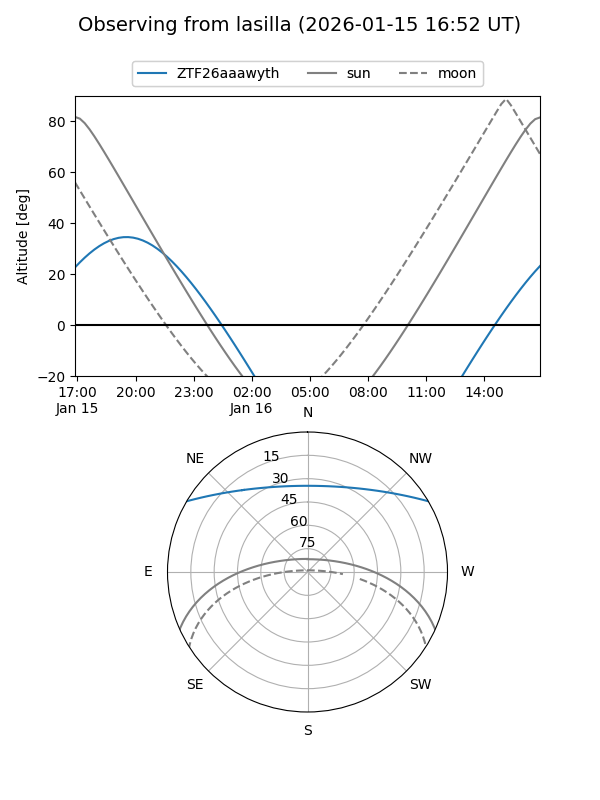
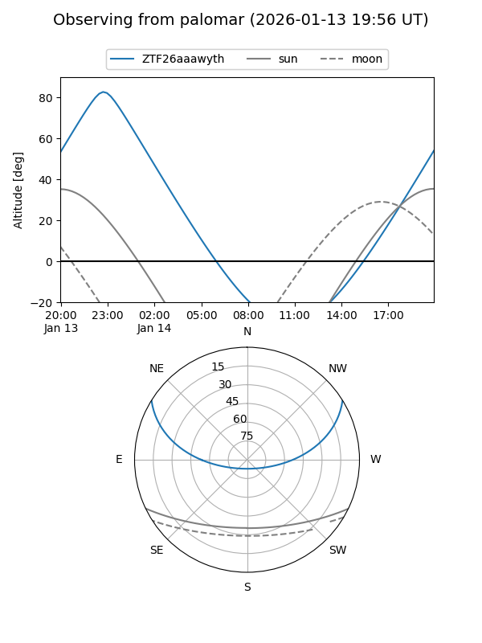

ZTF26aaawyth
Target ZTF26aaawyth at 2026-01-16 03:45
Aliases and brokers:
FINK: link
Lasair: link
ALeRCE: link
alt names
ZTF26aaawyth (ztf,fink_ztf)
Coordinates:
equatorial (ra, dec) = 337.1044,+26.02438
equatorial (HMS+DMS) = 22:28:25.06,+26:01:27.77
galactic (l, b) = (86.9433,-26.67637)
Flags:
Photometry:
last ztfg=19.08
1 ztfg detections
Lightcurve

Visibility


Additional plots